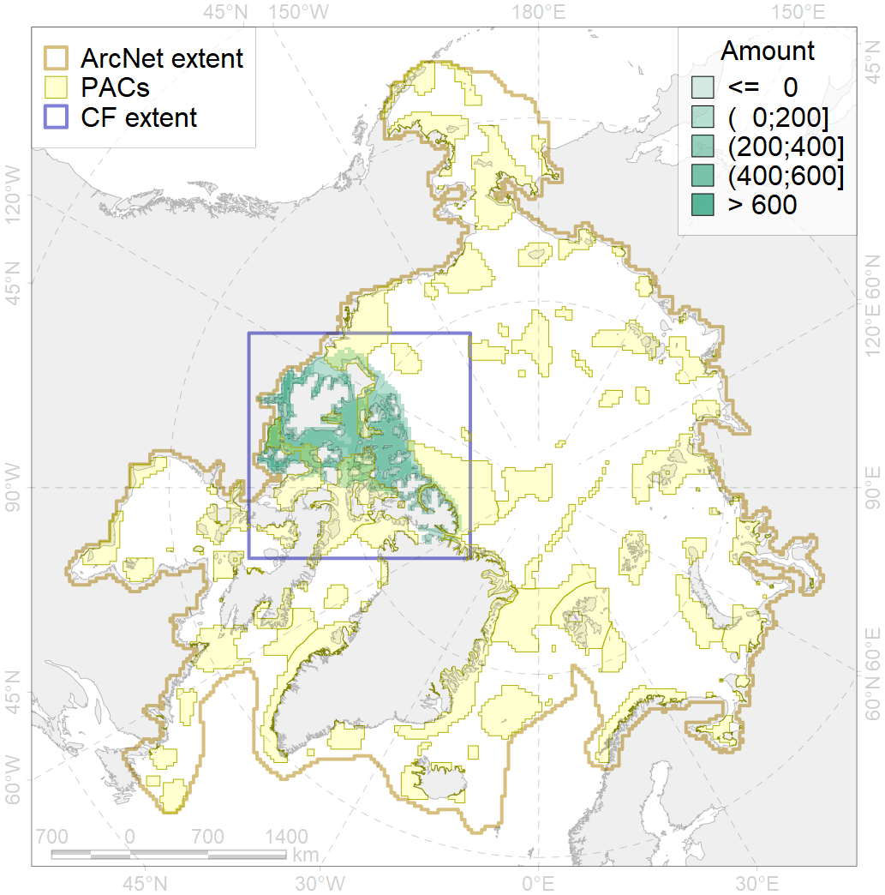
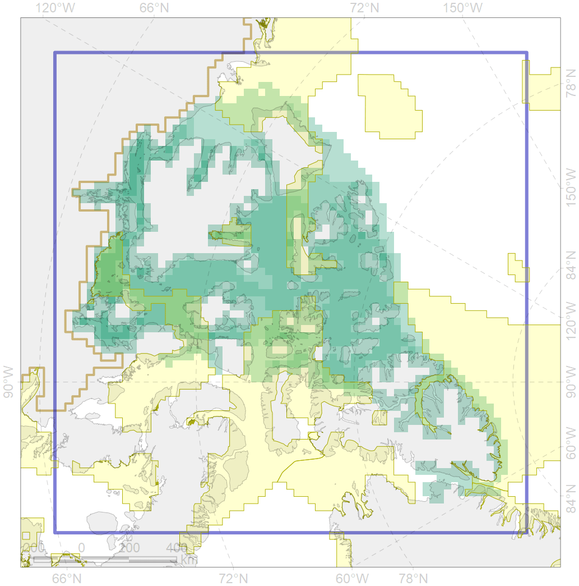

3006

| CF ID | 3006 |
| CF Name | Fast Ice distribution in the Canadian Archipelago region |
| Time Period | 2009 - 2018 |
| Source(s) | Merged ice charts |
| Seasonality | November - July |
| Depth Horizon | Sea level (0m) |
| Methodology | Processing of ice charts |
| Author Name | Nikita Platonov |
| Notes | |
| Conservation Target Set in the Scenario | 0.06 |
| Conservation Target Achieved in the Scenario | 0.253 (Scenario: 421.7%) |
| PAC ID | Proportion in the PAC | Contribution to ArcNet Target Achievement | PAC’s Contribution to the Achieved Target |
|---|---|---|---|
| 33 | 0.0% | 0.0% | 0.0% |
| 52 | 6.8% | 106.1% | 25.1% |
| 54 | 1.8% | 29.7% | 7.0% |
| 62 | 1.0% | 14.0% | 3.3% |
| 63 | 3.4% | 41.7% | 9.9% |
| 64 | 1.2% | 14.2% | 3.4% |
| 65 | 10.5% | 142.9% | 33.9% |
| inner | 24.7% | 348.6% | 82.7% |
| outer | 75.3% | 73.1% | 17.3% |